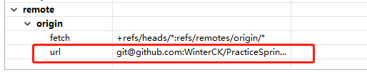
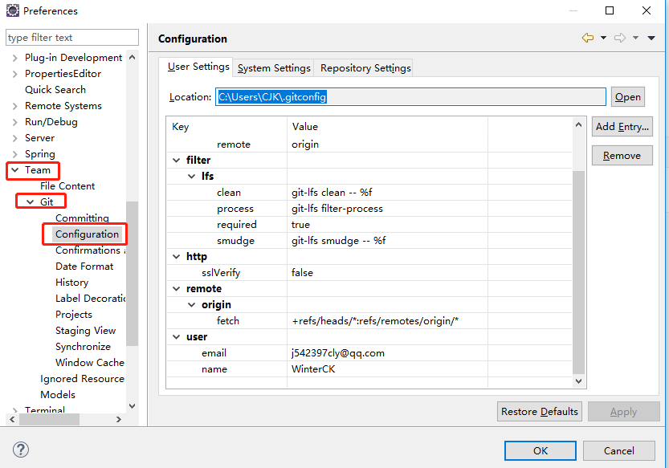
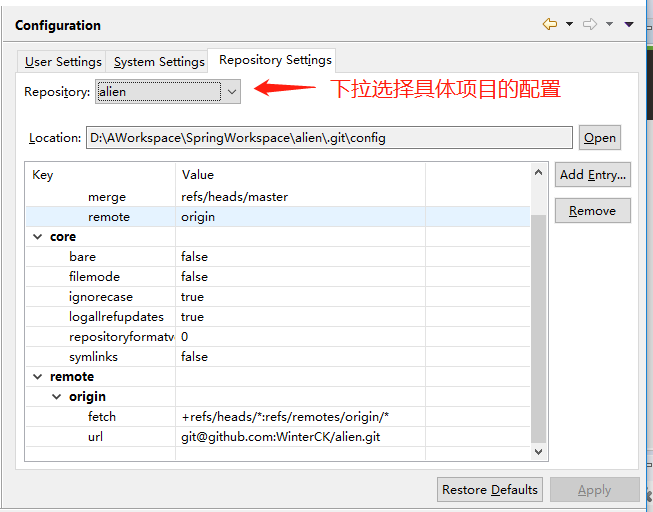

本文解决了每次执行git clone命令时，都会下载另一个项目的问题
今天使用git clone下载项目时，遇到了一个比较奇葩的问题。那就是每次使用git clone下载我新建的远程项目时，下载下来的都是另一个项目，最后解决时发现不是说只是另一个项目，而是你之前设置过的一个项目，不管git clone什么，下载的都是那个设置的项目。
解决方法：
主要涉及的是.gitconfig 文件，我出现这个问题的原因是之前使用eclipse错误的设置了全局的gitconfig的remote -> origin -> url 这一项，设置了为我自己的一个项目，导致下载的都是这个配置的项目，如图：

正确的设置去掉这一行就可以，路径是
1 | C:\Users\CJK(你的用户名路径)\.gitconfig |
我的改后的.gitconfig文件为如下
1 | [filter "lfs"] |
或者使用eclipse配置也可以，如下图：

另外eclipse的 Repository Settings 可以配置具体项目的config配置。

设置完之后就可以了，重新git clone 就没问题了。
不要脸环节
如果感觉本文对您有所帮助的话，或者有意向购买阿里云产品的话，可以点击一下 阿里云购买云产品优惠，最高2000元 链接~